EHS users may want to initialize surveys and/or pre-order charting forms for a group of workers or schedule send notifications. The Automated C3 Programs, which are within the Order Forms tool, allows you to add participants to a program by turning on any survey, pre-order any charting form, or notifications to be sent for any defined group based on a custom schedule. From the modal, you can run a program on demand or schedule it based on a custom frequency, re-initialize surveys, and bulk order new surveys along with forms or separately, and send email or text notifications to recipients.
Surveys that have not already been completed will not be re-initialized. If you need to re-initialize surveys without ordering new ones for recipients who have not had the survey ordered for them yet, you can use the Initialize Programs tool under C3>Initialize Programs.
Re-initializesurveychanges the survey status from Complete to Incomplete.
Order new surveysturns on surveys for participants who do not have the survey in their profile.
The table below gives you examples on when you might use the Order Forms option.
I want to:
Example:
Turn on a survey for a group of participants without re-initializing previously-completed surveys.
I want to start a new annual program (e.g. MRI Worker Screening) for the Imaging Department. Five participants have already completed their surveys as a pilot program. I now want to add the rest of the department to the program by turning on their surveys, without re-initializing the pilot program participants' surveys.
Send a reminder to any participants who have not completed a survey.
During the flu season, my organization wants to remind any participants who have not completed their flu survey that it needs to be completed on a weekly basis, until it is complete.
Turn on surveys and pre-order charting forms for a group of participants.
My organization now requires the MMR vaccination for all. After completing an audit for those not up-to-date on their MMR, I want to turn on the MMR survey and pre-order the MMR Immunization charting form for this group.
Before You Begin
Determine the survey(s) you want to initialize, the charting form(s) to pre-order, and/or any communication that needs to be sent.
Determine the people you want to be in your program group.
If you have survey(s) setup with logic to “auto-order” charting forms, you may not want to pre-order the associated charting forms using this tool. If you have questions about your survey logic, please contact Customer Support.
If you have an outbound lab feed, pre-ordered lab charting forms using the Order Forms option will be included in the outbound lab feed.
Pre-ordered charting forms, from Order Forms, do not create an Incident ID and cannot be used for Incident tracking.
Using the Automated C3 Programs Option
On the C3Tab, click Order Forms.
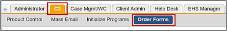
Click New Order Forms.
Select the Visit Type to access the list of surveys and charting forms.
The forms associated with that Visit Type will display in the Surveys and Tests tabs for selection.
Enter a Description of the reason, such as MMR Immunization October 2020.
Enter a unique Program Name.
Click Check Availability to search for any programs with that name.
Click Save.
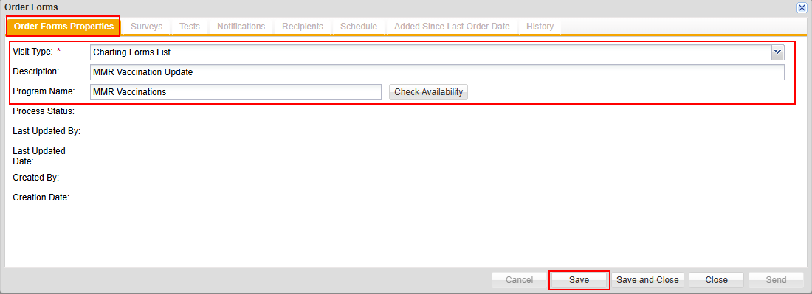
Initializing and Ordering New Surveys
On the Surveys tab, click New.
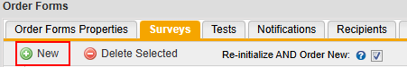
Select the checkbox next to the survey(s) you wish to initialize.
Click Add.
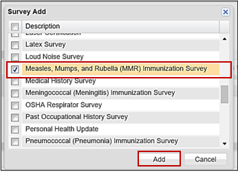
To remove a survey from the list, select the checkbox next to the survey and click Delete Selected.
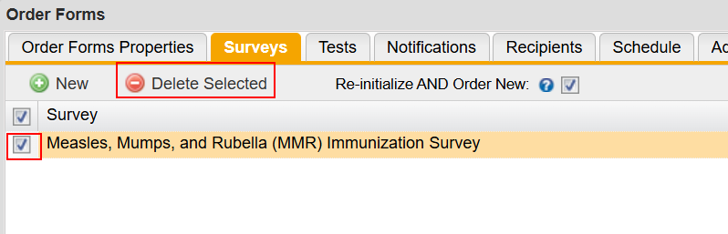
Optionally, select the Re-initialize and Order New check box to re-initialize the selected survey(s) for participants who have previously completed the survey and additionally order a new survey for participants who have not completed it.
Pre-Ordering Charting Forms
On the Tests tab, click New.
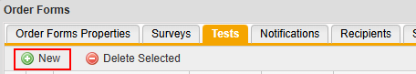
Select the checkbox next to the charting form(s) you wish to order.
Select the Provider Location, Provider Contact, and Date/Time you wish to apply to the charting form(s).
This is the same feature that is in Employee Record>Order Tests.
Click Add.
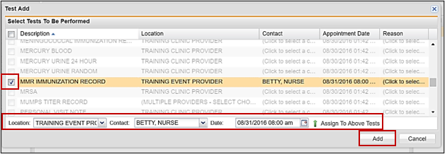
Note: If a charting form is grayed out, that service is not provided by the Location you have selected.
To remove a charting form from the list, select the checkbox next to the charting form and click Delete Selected.
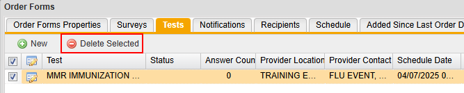
Optionally, click Edit to refill the charting form if the same information and status can be auto-filled for all recipients.
On the Recipients tab, add the recipients by these methods:
Select a custom report (refer to Custom Reports).
Note: The report must be saved to a folder with the name 'C3 Program Reports' in order to be selected.
Note: If a schedule is added, the recipients list will be automatically updated each time the schedule runs if the list was build using either a custom report or a distribution list. To have the list remain static, do not add a schedule or use a CSV or manually build the distribution list.
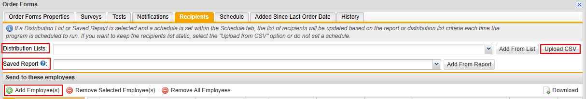
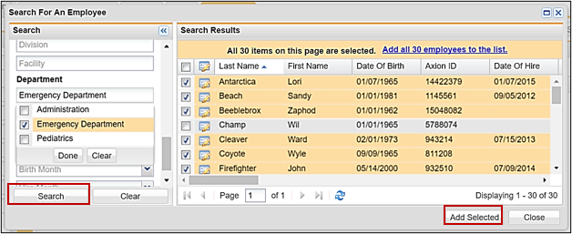
Click Save, Save and Close, or Send. Send will apply the above request to all recipients in the list.
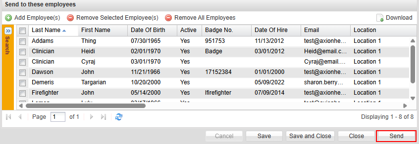
Sending Notifications
On the C3 tab, click Notifications.
Select a Communication Template. You can make any changes to the template directly in the Message field.
Note: Communication templates are configured by Client Admin users.
Select the e-mail address the notification will come from.
Optionally, select the CC Supervisor check box to include any supervisors.
Optionally, include any text to include in a text message.
Click Save, Save and Close, or Send.
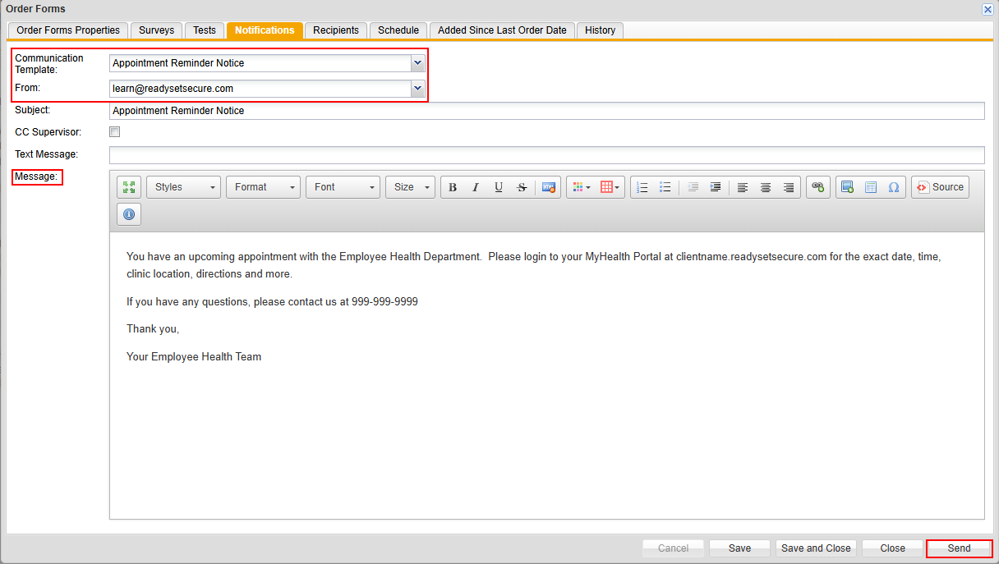
Scheduling Order Forms
On the C3 tab, click Schedule.
Select the start date.
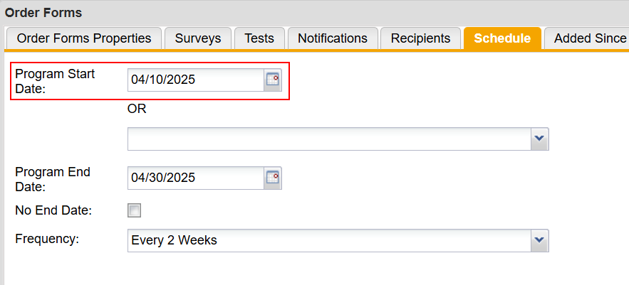
Alternatively, select a date relative to when a form was last completed.
For example, you can choose Last Completed Survey and select Asbestos Medical Survey to have the schedule start based on when they last completed that survey.
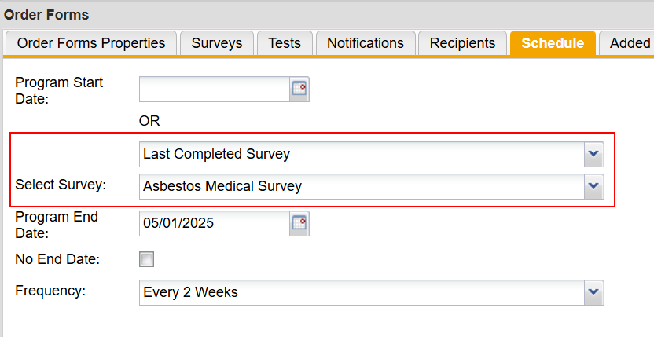
Select an end date or check the No End Date checkbox if you do not want the schedule to end.
Select the Frequency the schedule will run at.
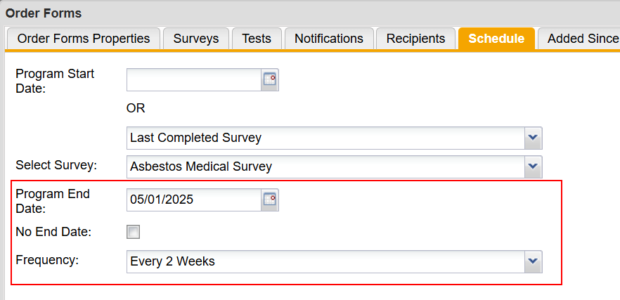
Viewing Program Participants
In Participant Demographics, you can click View C3 Programs to display any programs the participant has been added to. Alternatively, within the participant record, in Logs > C3 Program Logs, you can view any program a participant has been added to, the forms and surveys that were ordered and whether or not a notification was sent.
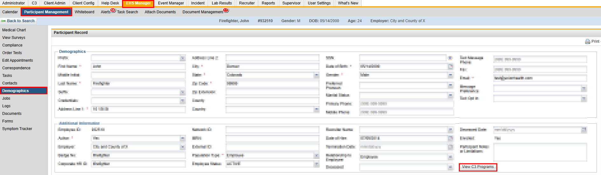
In C3>Order Forms, on theAdded Since Last Order Date tab, you can view the list of new participants added to the recipients list since the last time the program ran.
Viewing Completed Programs
On the C3 tab, click Order Forms.
In the Searchcriteria in the left menu, change the Status box from "READY"to "COMPLETE".
Click Search or press Enter.
Find and open the item wanted by clicking the Edit icon.
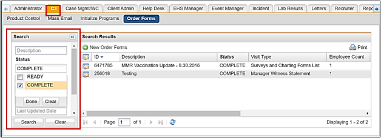
The dialog box will display the Order Forms dialog box. Click on any tab to see the details of the Order Formsbundle.
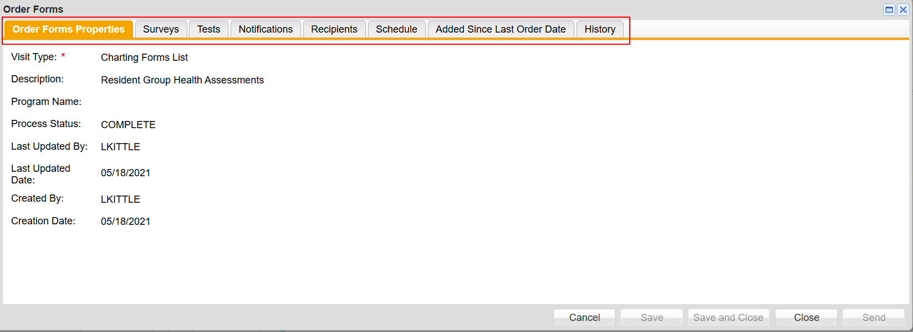
Optionally, you can select one or more programs and click Inactivate Selected to deactivate a program or click Activate Selected to activate an inactive program.
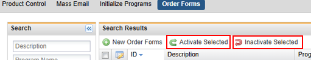
If an error occurs, a Show button will appear. It is recommended that users filter to view "SCHEDULED" and "COMPLETED" programs to see if any errors occur. If an error does occur, click Show to display the participant IDs of any participants to whom the forms, surveys, or notifications were not sent.
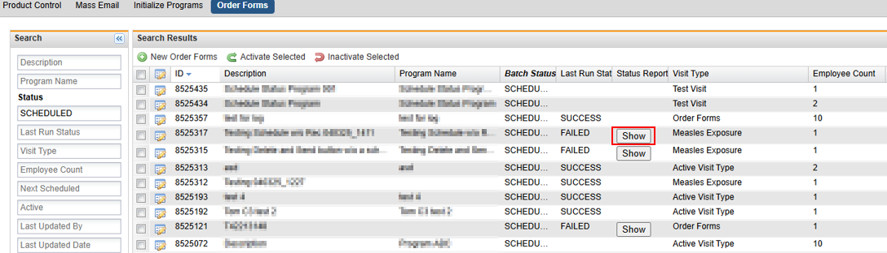
Additional Information
You cannot go back and change the Visit Type once you have added a survey or charting form. You will need to create a new Order Forms bundle.
You cannot change the “Order Form” attributes after you click Send.
When you click Confirmation after you click Send, the surveys and tests are available in the employee record in real time.
If you accidently pre-order Charting Forms, you can void the unwanted forms in Employee Record > Edit Appointments section (
refer to Voiding Exams or Charts or Tests).